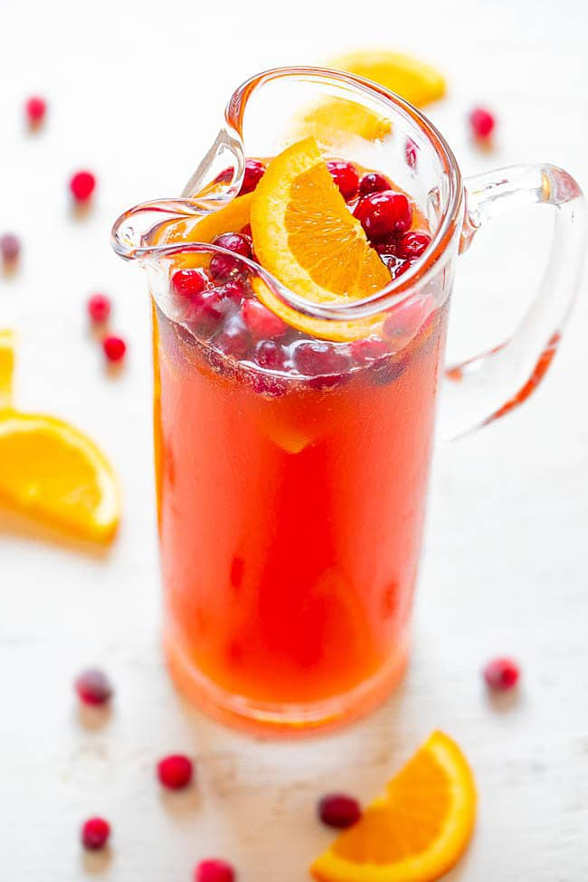
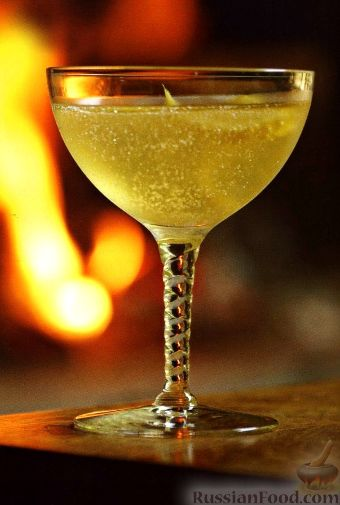
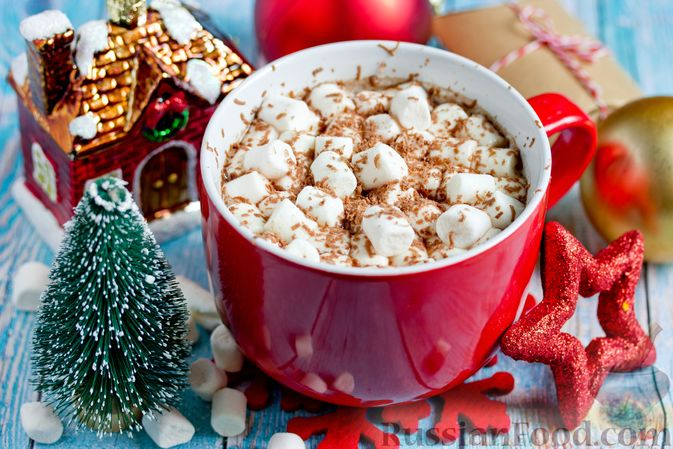
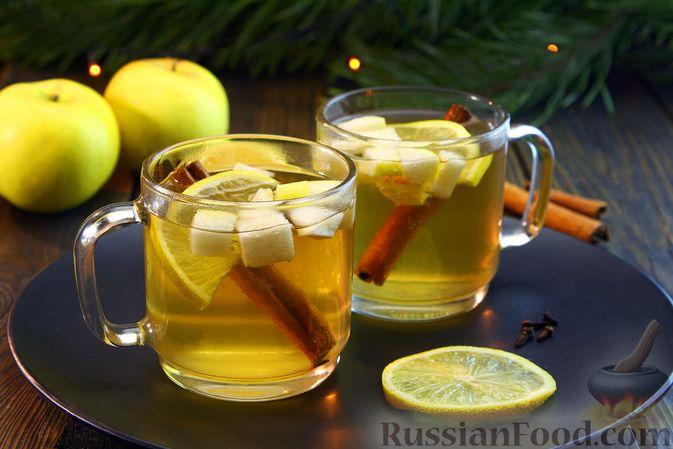

Новогодние напитки:

Рождественский пунш
Ингредиенты: корица, корица в порошке, гвоздика, гвоздика, перец душистый, перец душистый молотый, кардамон, кардамон, корень имбиря, апельсин, клюква, вода, мёд, орех мускатный

Коктейль "Сайдкар" #18+
Ингредиенты: ликер апельсиновый, коньяк, вино, лимонные дольки, цедра лимона

Какао с пряностями и маршмеллоу
Ингредиенты: молоко, какао-порошок, сахар тростниковый, зефир, имбирь молотый, корица молотая, орех мускатный, гвоздика, ванилин, соль

Яблочный глинтвейн из белого вина #18+
Ингредиенты: вино белое полусладкое, яблоко, сахар, корица молотая, гвоздика, перец чёрный горошком, лимон, корица